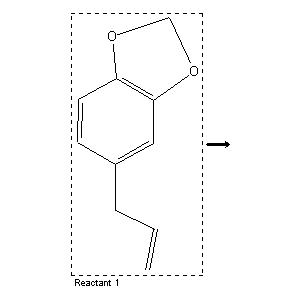

|  |
| FA | RX(1); FLST(1); RX(4) |
Reaction (1 of 1)
| Reaction ID | 5368297 |
| Reactant BRN | 136380 |
| Reactant | 5-allyl-benzo[1,3]dioxole |
| No. of Reaction Details | 4 |
Reaction Details (1 of 1)
| Reaction Classification | Chemical behaviour (half reaction) |
| Other Conditions | in Gegenwart von anderen ungesaettigten Verbindungen.Hydrogenation |
| Subject Studied | Kinetics |
| Comment | Handbook |
| Citation Pointer | 506396; Journal; Lebedew; Platonow; JCSOA9; J.Chem.Soc.; 1930; 332, 333; ZRKOAC; Zh.Russ.Fiz.-Khim.O-va; 61; 1929; 2165, 2166;506397; Journal; Lebedew; Jakubtschik; ZRKOAC; Zh.Russ.Fiz.-Khim.O-va; 60; 1928; 816, 827; CHZEA6; Chem.Zentralbl.; GE; 99; II; 1928; 1315; |
Reaction Details (2 of 1)
| Reaction Classification | Chemical behaviour (half reaction) |
| Citation Pointer | 13295; Journal; Riemschneider,R.; Grabitz,B.E.; MOCMB7; Monatsh.Chem.; GE; 91; 1960; 22-40;25941; Journal; Gilbert,E.E.; CJCHAG; Can.J.Chem.; EN; 48; 1970; 730-734;164046; Journal; Barton,D.H.R.; Jones,D.W.; JCSOA9; J.Chem.Soc.; EN; 1965; 3563-3570;250405; Journal; Colonna,M.; Bruni,P.; GCITA9; Gazz.Chim.Ital.; IT; 95; 1965; 245-256;3271835; Journal; Balduin; Brown; CJCHAG; Can.J.Chem.; 43; 1965; 2621;2645244; Journal; Kametani et al.; YKKZAJ; Yakugaku Zasshi; 83; 1963; 174,176; Chem.Abstr.; 59; 6365; 1963;3193836; Journal; Okuda; CPBTAL; Chem.Pharm.Bull.; 10; 1962; 96;3838410; Journal; Susa; Bluhm; JOCEAH; J.Org.Chem.; 25; 1960; 108,110;3215042; Journal; Bochwic; Kapuscinski; ROCHAC; Rocz.Chem.; 39; 1965; 1251,1255; Chem.Abstr.; 64; 12656;3215042; Journal; Bochwic; Kapuscinski; ROCHAC; Rocz.Chem.; 39; 1965; 1251,1255; Chem.Abstr.; 64; 12656;3614853; Journal; Kuraoka; NPKZAZ; Nippon Kagaku Zasshi; 82; 1961; 50;3614904; Journal; Takegami et al.; BCSJA8; Bull.Chem.Soc.Jpn.; 40; 1967; 1930,1931;3390779; Journal; Otsuki; Irino; CPBTAL; Chem.Pharm.Bull.; 23; 1975; 482,483,484,486;3615225; Journal; Mulvey; Waters; JCPKBH; J.Chem.Soc.Perkin Trans.2; 1978; 1059; |
Reaction Details (3 of 1)
| Reaction Classification | Chemical behaviour (half reaction) |
| Subject Studied | Rate constant |
| Citation Pointer | 4396679; Journal; Freidlin et al.; PECHAM; Pet.Chem.USSR (Engl.Transl.); 13; 1973; 182; NEFTAH; Neftekhimiya; 13; 1973; 635; |
Reaction Details (4 of 1)
| Reaction Classification | Chemical behaviour (half reaction) |
| Subject Studied | Kinetics |
| Citation Pointer | 3170546; Journal; Brown; JOCEAH; J.Org.Chem.; 35; 1970; 1900;3170546; Journal; Brown; JOCEAH; J.Org.Chem.; 35; 1970; 1900;4011980; Journal; Leprince et al.; BSCFAS; Bull.Soc.Chim.Fr.; 1976; 367,369;3339637; Journal; Baranova et al.; JAPUAW; J.Appl.Chem.USSR (Engl.Transl.); 47; 1974; 2840,2841; ZPKHAB; Zh.Prikl.Khim.(Leningrad); 47; 1974; 2751; |
Reference (1 of 19)
| Citation Number | 13295 |
| Document Type | Journal |
| Authors | Riemschneider,R.; Grabitz,B.E. |
| CODEN | MOCMB7 |
| Journal Title | Monatsh.Chem. |
| Language Code | GE |
| (Series) Volume | 91 |
| Publication Year | 1960 |
| Page | 22-40 |
Reference (2 of 19)
| Citation Number | 25941 |
| Document Type | Journal |
| Authors | Gilbert,E.E. |
| CODEN | CJCHAG |
| Journal Title | Can.J.Chem. |
| Language Code | EN |
| (Series) Volume | 48 |
| Publication Year | 1970 |
| Page | 730-734 |
Reference (3 of 19)
| Citation Number | 164046 |
| Document Type | Journal |
| Authors | Barton,D.H.R.; Jones,D.W. |
| CODEN | JCSOA9 |
| Journal Title | J.Chem.Soc. |
| Language Code | EN |
| Publication Year | 1965 |
| Page | 3563-3570 |
Reference (4 of 19)
| Citation Number | 250405 |
| Document Type | Journal |
| Authors | Colonna,M.; Bruni,P. |
| CODEN | GCITA9 |
| Journal Title | Gazz.Chim.Ital. |
| Language Code | IT |
| (Series) Volume | 95 |
| Publication Year | 1965 |
| Page | 245-256 |
Reference (5 of 19)
| Citation Number | 506396 |
| Document Type | Journal |
| Authors | Lebedew; Platonow |
| CODEN | JCSOA9; ZRKOAC |
| Journal Title | J.Chem.Soc.; Zh.Russ.Fiz.-Khim.O-va |
| (Series) Volume | 61 |
| Publication Year | 1930; 1929 |
| Page | 332, 333; 2165, 2166 |
Reference (6 of 19)
| Citation Number | 506397 |
| Document Type | Journal |
| Authors | Lebedew; Jakubtschik |
| CODEN | ZRKOAC; CHZEA6 |
| Journal Title | Zh.Russ.Fiz.-Khim.O-va; Chem.Zentralbl. |
| Language Code | GE |
| (Series) Volume | 60; 99 |
| Number | II |
| Publication Year | 1928; 1928 |
| Page | 816, 827; 1315 |
Reference (7 of 19)
| Citation Number | 2645244 |
| Document Type | Journal |
| Authors | Kametani et al. |
| CODEN | YKKZAJ |
| Journal Title | Yakugaku Zasshi |
| Journal/Review Without CODEN | Chem.Abstr. |
| (Series) Volume | 83; 59 |
| Number | 6365 |
| Publication Year | 1963; 1963 |
| Page | 174,176 |
Reference (8 of 19)
| Citation Number | 3170546 |
| Document Type | Journal |
| Authors | Brown |
| CODEN | JOCEAH |
| Journal Title | J.Org.Chem. |
| (Series) Volume | 35 |
| Publication Year | 1970 |
| Page | 1900 |
Reference (9 of 19)
| Citation Number | 3193836 |
| Document Type | Journal |
| Authors | Okuda |
| CODEN | CPBTAL |
| Journal Title | Chem.Pharm.Bull. |
| (Series) Volume | 10 |
| Publication Year | 1962 |
| Page | 96 |
Reference (10 of 19)
| Citation Number | 3215042 |
| Document Type | Journal |
| Authors | Bochwic; Kapuscinski |
| CODEN | ROCHAC |
| Journal Title | Rocz.Chem. |
| Journal/Review Without CODEN | Chem.Abstr. |
| (Series) Volume | 39; 64 |
| Number | 12656 |
| Publication Year | 1965 |
| Page | 1251,1255 |
Reference (11 of 19)
| Citation Number | 3271835 |
| Document Type | Journal |
| Authors | Balduin; Brown |
| CODEN | CJCHAG |
| Journal Title | Can.J.Chem. |
| (Series) Volume | 43 |
| Publication Year | 1965 |
| Page | 2621 |
Reference (12 of 19)
| Citation Number | 3339637 |
| Document Type | Journal |
| Authors | Baranova et al. |
| CODEN | JAPUAW; ZPKHAB |
| Journal Title | J.Appl.Chem.USSR (Engl.Transl.); Zh.Prikl.Khim.(Leningrad) |
| (Series) Volume | 47; 47 |
| Publication Year | 1974; 1974 |
| Page | 2840,2841; 2751 |
Reference (13 of 19)
| Citation Number | 3390779 |
| Document Type | Journal |
| Authors | Otsuki; Irino |
| CODEN | CPBTAL |
| Journal Title | Chem.Pharm.Bull. |
| (Series) Volume | 23 |
| Publication Year | 1975 |
| Page | 482,483,484,486 |
Reference (14 of 19)
| Citation Number | 3614853 |
| Document Type | Journal |
| Authors | Kuraoka |
| CODEN | NPKZAZ |
| Journal Title | Nippon Kagaku Zasshi |
| (Series) Volume | 82 |
| Publication Year | 1961 |
| Page | 50 |
Reference (15 of 19)
| Citation Number | 3614904 |
| Document Type | Journal |
| Authors | Takegami et al. |
| CODEN | BCSJA8 |
| Journal Title | Bull.Chem.Soc.Jpn. |
| (Series) Volume | 40 |
| Publication Year | 1967 |
| Page | 1930,1931 |
Reference (16 of 19)
| Citation Number | 3615225 |
| Document Type | Journal |
| Authors | Mulvey; Waters |
| CODEN | JCPKBH |
| Journal Title | J.Chem.Soc.Perkin Trans.2 |
| Publication Year | 1978 |
| Page | 1059 |
Reference (17 of 19)
| Citation Number | 3838410 |
| Document Type | Journal |
| Authors | Susa; Bluhm |
| CODEN | JOCEAH |
| Journal Title | J.Org.Chem. |
| (Series) Volume | 25 |
| Publication Year | 1960 |
| Page | 108,110 |
Reference (18 of 19)
| Citation Number | 4011980 |
| Document Type | Journal |
| Authors | Leprince et al. |
| CODEN | BSCFAS |
| Journal Title | Bull.Soc.Chim.Fr. |
| Publication Year | 1976 |
| Page | 367,369 |
Reference (19 of 19)
| Citation Number | 4396679 |
| Document Type | Journal |
| Authors | Freidlin et al. |
| CODEN | PECHAM; NEFTAH |
| Journal Title | Pet.Chem.USSR (Engl.Transl.); Neftekhimiya |
| (Series) Volume | 13; 13 |
| Publication Year | 1973; 1973 |
| Page | 182; 635 |